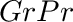

Dependencies
NVIDIA CUDA 5.0+
CMakeLists.txt
set( PLUGINS "radiation" )
Header File
#include "RadiationModel.h"
Class
Package
NVIDIA CUDA 5.0+
Mac OSX:
$ brew install Caskroom/cask/cudaDebian/Ubuntu:**
$ sudo apt-get install nvidia-cuda-toolkit** Potential issues:
This model simulates the transport of radiative energy for arbitrary wavelength bands using a GPU-accelerated ray-tracing model. The model details are described in Bailey (2018). Briefly, the model uses a reverse ray-tracing approach to simulate emission from primitive elements, collimated radiation sources, and point radiation sources.
Constructors
RadiationModel( helios::Context* context )
The RadiationModel class is initialized by simply passing a pointer to the Helios context as an argument to the constructor. This gives the class the ability to automatically query model geometry and read/write from/to model data.
Primitive Data
Units
Data Type
Description
Availalbe Plug-ins
Default Value
temperature
Kelvin
float
Primitive surface temperature. NOTE: Only needed if performing emission calculations.
Can be computed by EnergyBalanceModel plug-in
300 K
reflectivity_*
unitless
float
Primitive reflectivity for band * (i.e., reflectivity for band 'PAR' would be 'reflectivity_PAR').
N/A
0
transmissivity_*
unitless
float
Primitive transmissivity for band * (i.e., transmissivity for band 'PAR' would be 'transmissivity_PAR').
N/A
0
emissivity_*
unitless
float
Primitive emissivity for band * (i.e., emissivity for band 'PAR' would be 'emissivity_PAR'). NOTE: Only needed if performing emission calculations.
N/A
1.0
Primitive Data
Units
Data Type
Description
radiation_flux_*
W/m2
float
Absorbed radiation flux for band * (i.e., the flux for band 'PAR' would be 'radiation_flux_PAR').
The radiation model class contains functions and data assoicated with the model. To begin, declare an instance of the RadiationModel class. The class constructor takes one argument - a pointer to the Helios context. It uses this pointer to access model geometry and data in the context.
RadiationModel radiationmodel(&context); //declare the model classArbitrary radiation wavelength bands can be added to the model, over which radiation calculations are performed. Each wavelength band is given a label that is defined by the user (e.g., 'PAR'). Each band has the possibility of having components of direct, diffuse, and emission, each of which are specified when adding the band. The addRadiationBand() command is used to add each band, which takes one argument, which is a user-defined label for the band (e.g, 'PAR').
radiationmodel.addRadiationBand( "PAR" ); //Add band 'PAR'Radiative properties (reflectivity, transmissivity, emissivity) are defined for each band each primitive. Their values are set via primitive data (see also Input Primitive Data table above, and setPrimitiveData()):
float rho = 0.1; //reflectivity value
context.setPrimitiveData( UUID, "reflectivity_PAR", HELIOS_TYPE_FLOAT, 1, &rho); float tau = 0.1; //transmissivity value
context.setPrimitiveData( UUID, "transmissivity_PAR", HELIOS_TYPE_FLOAT, 1, &tau);Note that absorptivity is not directly set, rather it is calculated as . If is calculated to be negative, an error is thrown.
By default, radiation emission calculations are performed for each band. Each primitive emits radiation with a flux of  , where
, where  is the primitive's emissivity,
is the primitive's emissivity,  is the Steffan Boltzmann constant, and
is the Steffan Boltzmann constant, and  is the primitive's surface temperature in Kelvin. By default, it is assumed that
is the primitive's surface temperature in Kelvin. By default, it is assumed that  , unless primitive data exists that defines the emissivity. By default, it is also assumed that
, unless primitive data exists that defines the emissivity. By default, it is also assumed that  , unless the primitive data 'temperature' exists in the Context whose value defines the temperature.
, unless the primitive data 'temperature' exists in the Context whose value defines the temperature.
Emission can be disabled for the band by caling the disableEmission() function. For example, for the photosynthetically active (PAR) band, terrestrial objects do not emit radiation (i.e.,  ) and thus rather than setting a zero emissivity for this band for all primitives, it is desirable to simply disable radiation emission for this band:
) and thus rather than setting a zero emissivity for this band for all primitives, it is desirable to simply disable radiation emission for this band:
radiationmodel.disableEmission( "PAR" ); //Disable emission for the 'PAR' bandBy default, a planar primitive will emit radiation from both faces. For primitives that only emit from one face (e.g., ground primitives), this default behavior should be modified. Single-sided emission can be achieved by setting primitive data for the particular primitive with a name of "twosided_flag" to a value of 0. Note that in this case radiation will be emitted from the side with its face in the direction of the primitive normal vector. If primitive data called "twosided_flag" is set to 1, this will produce the default behavior of emission from both faces.
A primitive with "twosided_flag" set to 0 will not absorb any radiation from the back face of the primitive, but it will attenuate radiation. So if a ray hits the back face, the ray trajectory will be terminated, but no energy will be deposited.
There are three types of external sources of radiation that can be simulated: 1) a collimated radiation source (beams of radiation are approximately parallel), 2) ambient diffuse radiation, and 3) a point source.
A collimated radiation source is defined by a unit vector pointing in the direction of the collimated source, and by the radiation flux emitted by the source normal to the direction of radiation propagation.
The radiation model also requires the specification of the number of rays per primitive to be used in the simulation (default is 100 rays per primitive). The more rays used in the simulation the more accurate the answer will be, but this will result in a longer simulation time.
Below is an example of adding a collimated source oriented in the direction of the sun, with a flux of 800 and using 200 rays per primitive:
vec3 sun_dir(0,0,1);
uint SunSource = radiationmodel.addCollimatedRadiationSource( sun_dir ); //add the source, whose identifier is stored in the 'SunSource' variable
radiationmodel.setSourceFlux(SunSource,"PAR",800); //set the flux of the source
radiationmodel.setDirectRayCount("PAR",200); //set the ray count for sources Adding point sources is similar to adding collimated sources. Point sources are added using the addPointRadiationSource() function, which takes an (x,y,z) location of the point source as its argument. This function returns a uint which specifies the identifier for the point source, similar to a collimated source. The flux emanating from the source can also be set using the source identifier.
vec3 sun_dir(0,0,1);
uint PointSource = radiationmodel.addPointRadiationSource( sun_dir ); //add the source, whose identifier is stored in the 'PointSource' variable
radiationmodel.setSourceFlux(PointSource,"PAR",800); //set the flux of the source
radiationmodel.setDirectRayCount("PAR",200); //set the ray count for sourcesAn ambient radiation source is added simply by setting its flux value:
radiationmodel.setDiffuseRadiationFlux("PAR",200.f); //set the fluxThe default is to use 100 diffuse rays per primitive, which can be set to a user-defined value using the following command:
radiationmodel.setDiffuseRayCount("PAR",200); //set the number of rays
If the reflectivity or tranmissivity are set to values greater than 0, scattering calculations are required to simulate the reflected or transmitted radiation transport. These scattering calculations are performed iteratively until there is no energy left to be scattered. The number of scattering iterations is defined using:
radiationmodel.setScatteringDepth(5); //set the number of scattering iterations
Before simulations are run, we must update the context geometry within the radiation model using the updateGeometry() command. The geometry update can be somewhat costly, so it should only be done whenever geometry changes.
Simulations for each band are run separately via the runBand() command:
radiationmodel.updateGeometry(); //build the context geometry in the radiation model radiationmodel.runBand("PAR"); //run the model for the 'PAR' bandThe model will create several primitive data in the context with values set using simulation results (see Sect. "Output Primitive Data" above).
A common task when using the radiation model is to integrate with the SolarPosition plug-in to set the position of a collimated radiation source (i.e., the sun), potentially at several different times of the day. In this case, one would initialize the SolarPosition and RadiationModel classes and set up relevant inputs, then execute a for-loop over each time of the day. For each time iteration, the current time is set in the Context, the direction of the sun is calculated for that particular time, then the sun direction is passed to the radiation model. An example is illustrated in the code below.
#include "Context.h"
#include "Visualizer.h"
#include "SolarPosition.h"
#include "RadiationModel.h" using namespace helios; int main( void ){ float pressure = 101300; //atmospheric pressure (Pa)
float temperature = 300; //air temperature (K)
float humidity = 0.5; //relative humidity (-)
float turbidity = 0.05; //atmospheric turbidity coeff (-)
context.addSphere( 50, make_vec3(0,0,2), 1 ); SolarPosition solarposition( UTC, latitude, longitude, &context ); //initialize the solar position model RadiationModel radiationmodel( &context ); //initialize the radiation model uint SunSource = radiationmodel.addCollimatedRadiationSource(); //add the source (sun), we'll set it's direction later radiationmodel.addRadiationBand("SW");
radiationmodel.setDirectRayCount("SW",1000); //set the ray count for source
radiationmodel.disableEmission("SW"); radiationmodel.updateGeometry(); context.setDate( date ); //set the date, which will not change for( int hour=7; hour<22; hour++ ){ context.setTime(0,hour); //set the current time for this iteration Visualizer vis(1000); //Initialize the visualizer vis.buildContextGeometry(&context); //add all geometry in the Context to the visualizer
vis.colorContextPrimitivesByData( "radiation_flux_SW" ); //tell the visualizer to color based on radiation flux (primitive data) vis.plotUpdate(); //plot the result vis.printWindow(); //print to JPEG image helios::wait(3); //wait for 3 seconds vis.closeWindow(); //close the window, then continue to next loop iteration }//end loop over time return 0; }Visualization of radiation model outputs is typically achieved by coloring primitives based on the value of the primitive data "radiation_flux_*" for a particular band. However, we could visualize any input or output of the model or calculated value based on the model outputs.
A simple example of visualization of the absorbed flux for band "PAR" is given below, which assumes that a band exists named "PAR" and the model was run for that band.
Visualizer vis(1000); vis.buildContextGeometry( &context );
vis.colorContextPrimitivesByData("radiation_flux_PAR");
vis.enableColorbar(); vis.plotInteractive();It could also be possible to visualize the net all-wave radiation flux by summing multiple band fluxes. The following example assumes that there are bands created in the model for shortwave radiation called "SW" and for longwave radiation called "LW", and that the model has been run for each of these bands.
Visualizer vis(1000); vis.buildContextGeometry( &context ); std::vector<float> total_flux;
std::vector<uint> allUUIDs = context.getAllUUIDs();
for( size_t p=0; p<allUUIDs.size(); p++ ){
uint UUID = allUUIDs.at(p);
float flux_SW, flux_LW;
context.getPrimitiveData( UUID, "radiation_flux_SW", flux_SW );
context.getPrimitiveData( UUID, "radiation_flux_LW", flux_LW );
total_flux.push_back( flux_SW + flux_LW );
} vis.colorContextPrimitivesByValue( total_flux );
vis.enableColorbar(); vis.plotInteractive(); 1.8.14
1.8.14